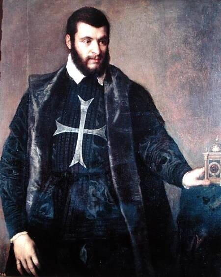
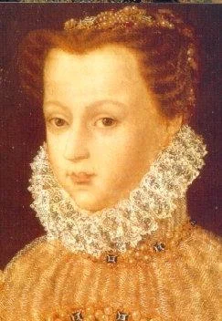
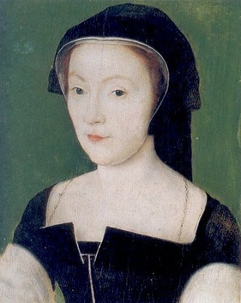
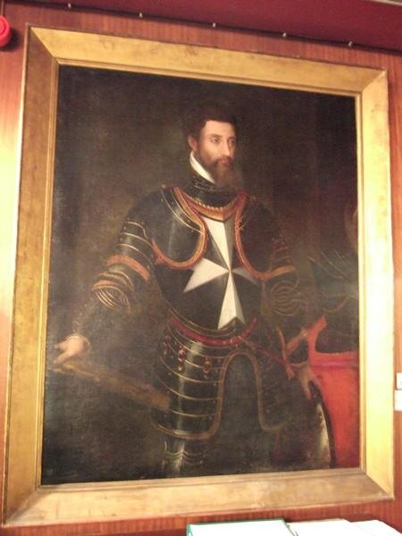
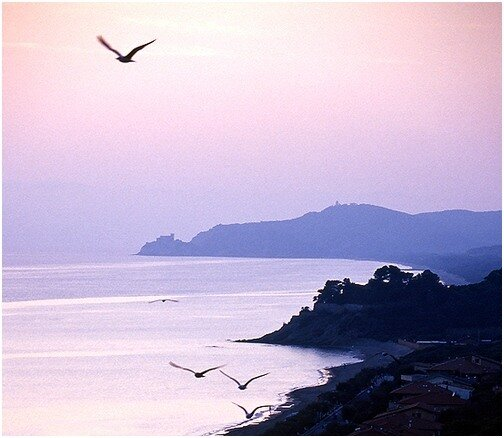

Это было в конце второй четверти шестнадцатого столетия.
Марк Твен «Принц и нищий»
Итак, о Леоне Строцци. В отличие от его отца и старшего брата, о нем написано не так много, хотя практически во всех исследованиях Л.Строцци называют выдающимся флотоводцем.

Портрет рыцаря. (Тициан.)
Леон рос и воспитывался вместе со своей кузиной Екатериной Медичи, будущей королевой Франции (с 1547 г.), родители которой умерли сразу после ее рождения. Этим, видимо, объясняется неоднократный переход флорентийца в течение его недолгой 39-летней жизни на французскую королевскую службу.

Екатерина всю жизнь любила детей Строцци как своих братьев и сестер .
С 1530 года Леон Строцци стал членом Мальтийского ордена и спустя некоторое время был возведен в сан приора Капуи.
После поражения изгнанников Флоренции, которых возглавил отец Леона Филипп Строцци, в битве при Монтемурло 2 августа 1537 года Леон начал фактически жизнь кондотьера. Начав свою морскую карьеру в качестве капитана галеры, уже к 1537 году он стал командиром эскадры. 22 июля этого же года он принял участие в бою в районе острова Мерлера (к северо-западу от Корфу) с 12 галерами под командованием османского флотоводца Али Челеби. Строцци первым из эскадры в составе кораблей императора, папы и госпитальеров бросил свои галеры на абордаж. Бой был очень ожесточенным, христиане одержали победу, захватив все галеры противника и уцелевших членов их экипажей. Но победа эта была достигнута огромной ценой: потери христиан составили полторы тысячи человек. Оставшимися силами объединенный флот христиан не смог противостоять подошедшему флоту Барбароссы, который, как мы уже писали ранее, в августе 1537 года захватил пролив между Корфу и материком и осадил остров.
Строцци на следующий год возглавил эскадру госпитальеров в составе сил Священной лиги и принял участие в кампании при Превезе. Подробно мы рассказывали об этом морском событии ранее.
В 1539 году Леон Строцци поступил на французскую службу.
Сделаем в этом месте небольшое отступление. Как известно, регламентом Мальтийского ордена рыцарь мог стать командиром галеры только по достижении 25 лет. Леон Строцци, как видим, занимал этот пост в более раннем возрасте. Мне не удалось найти объяснения этому факту. То ли регламент не был столь строгим, то ли влиятельные родственники молодого приора могли способствовать его служебной карьере, невзирая на регламенты и общепринятый порядок. Этот вопрос требует дополнительного изучения.
31 мая 1543 года Леон Строцци был назначен Генерал-лейтенантом галер Франции. Он поступил под непосредственное начало барона де Лагарда, Генерала галер, о котором мы уже писали ранее. В 1547 году, после смещения Лагарда, Строцци сам стал Генералом галер Франции.
Своей быстрой карьерой рыцарь был обязан покровительству родственника – папы Климента VII (до 1523 года кардинала Джулио де Медичи). Леон Строцци, находясь в рядах флота Мальтийского ордена, участвовал во многих боевых действиях госпитальеров против турок, в ходе которых заслужил славу блестящего морского командира. Однако большую часть своей службы во Франции он взаимодействовал с кораблями Османской империи, ставшей союзницей французского короля. Во время Итальянской войны 1542—1546 гг. ему пришлось вместе с турками участвовать в осаде Ниццы. После этого Франциск I назначил Строцци командиром эскадры галер, которая была направлена со специальной миссией к султану Сулейману. Тогдашний Великий магистр Мальтийского ордена Хуан де Омедес, арагонец и союзник императора Карла V, немедленно лишил Леона Строцци рыцарства и должности приора Капуи.
Мир с османами позволил королю Франции сосредоточиться на своих отношениях с Англией. При этом он активно использовал профранцузские настроения в окружении шотландской королевы Марии де Гиз. Скажем о ней несколько слов, используя общедоступные источники.
Мария была старшей дочерью Клода Лотарингского, герцога де Гиза, и Антуанетты де Бурбон-Вандом. В 1534 г. Мария де Гиз вышла замуж за Луи Орлеанского, герцога де Лонгвиля, близкого родственника короля Франции. Однако спустя три года первый супруг Марии скончался. Одновременно умерла Мадлен де Валуа, первая жена короля Шотландии Якова V, и король, верный союзу с Францией, стал искать себе новую невесту из французских аристократок. 18 мая 1538 г. в соборе Парижской Богоматери состоялась свадьба Марии и короля Шотландии. Вскоре молодая королева прибыла на свою новую родину.
У Марии де Гиз и Якова V было трое детей, но двое старших сыновей умерли в младенчестве, не дожив до одного года. Последнему ребенку, дочери Марии, к моменту смерти отца 14 декабря 1542 г. исполнилось лишь 6 дней отроду. Тем не менее она была провозглашена королевой Шотландии под именем Марии Стюарт.
Для управления страной в период несовершеннолетия королевы Марии Стюарт был сформирован регентский совет во главе с Джеймсом Гамильтоном, 2-м графом Арраном. Регент стал проводить политику ориентации на Англию, начались переговоры о браке Марии Стюарт и сына английского короля Генриха VIII, активно поощрялось распространение протестантства англиканского толка. В то же время вокруг кардинала Битона сформировалась профранцузская партия, к которой, естественно, примкнула Мария де Гиз.
Кардинал Битон 29 мая 1546 г. были убит в своем замке радикальными протестантами, что вызвало серьёзный политический кризис: убийцы захватили Сент-Эндрюс, удерживая там заложников. Правительство, которое вновь возглавил граф Арран, не могло справиться с ситуацией и было вынуждено обратиться за помощью к Франции. Король направил к берегам Шотландии флот под командованием Леона Строцци.
После смерти Франциска I и восшествия на престол Генриха II, открытого союзника дома Медичи, для Строцци перспективы скрестить мечи с противниками республики во Флоренции, находясь на французской службе, оказались совсем призрачными. Особенно после быстрого роста влияния на короля со стороны констабля Монморанси, давнего врага семейства Строцци. Тем не менее, адмирал Строцци исполнил приказ короля и во главе эскадры из двадцати галер направился на помощь Марии де Гиз. Французский экспедиционный корпус 31 июля 1547 г. выбил протестантов из Сент-Эндрюса и арестовал участников мятежа, после чего хорошо пошумел на побережье Шотландии, и с большим количеством награбленного у шотландских заговорщиков добра и немалым числом пленных, пройдя сквозь строй опешивших кораблей английской короны, вернулся во Францию. Король щедро отметил заслуги адмирала и сразу же отправил его в Марсель для организации обороны против сил императора Карла V.
Честолюбивый флорентиец горел желанием померяться силами со знаменитым Андреа Дориа, возглавлявшим флот Карла. Случай представился в 1551 году, когда Дориа с флотом из 44 кораблей пересекал Средиземное море, имея задачу доставить в Барселону эрцгерцога Максимиллиана с семьей. Корабли Строцци появились неожиданно и выиграли ветер у Дориа. Против ожидания, имперский флот по приказу Дориа укрылся в Вильфранше, избежав боя. Далее последовало представление, столь типичное для того времени, когда средства связи были еще в зачаточном состоянии. Строцци поднял на своих кораблях испанские флаги и направился в Барселону. Встречать «испанский» флот вышло почти все население города, заполнив до отказа набережные и прибрежные улицы. Не имея на борту достаточного количества десанта, чтобы высадиться на берег, Строцци просто сделал несколько залпов из всех орудий своих кораблей и, довольный произведенным эффектом, увел свою эскадру назад в Марсель, захватив по пути в качестве приза несколько испанских кораблей. Эту шумную, но в общем-то бесполезную акцию тут же использовали против Строцци его тайные противники при дворе. На должность командующего Марсельской эскадрой был назначен Франсуа Монморанси.
Строцци, которого не известили о его смещении, тем не менее догадался о миссии Монморанси, выехавшего из Парижа в Марсель, и не дожидаясь преемника, поднялся на одну из захваченных у испанцев галер, пересек цепь, закрывавшую вход в порт, и направился на Мальту, где попросил убежища. Этот срочный побег объясняется также тем, что Строцци получил сведения о готовящемся на него покушении . Эту информацию передал адмиралу якобы сам наемный убийца по имени Корсо. Перед отплытием из Марселя Строцци вернул королю Франции свой адмиральский штандарт, который сопроводил письмом. Послание начиналось так: «Сир, слава была тем мотивом, который побуждал меня искать чести на службе Вашему величеству. Однако беспокойство за свою жизнь и забота о той же славе вынуждают меня сегодня покинуть Ваше королевство, поскольку, как я убедился, я не заслужил здесь никакого другого вознаграждения за свою службу, кроме унизительного изгнания и позорной смерти от руки наемного убийцы.»
В это время отчаянное положение, в котором оказался Мальтийский орден, вынудило великого магистра сменить гнев на милость, простить флорентийцу участие в осаде Ниццы и вернуть на высшую должность в мальтийском флоте, чтобы Строцци смог организовать операцию возмездия за потерю Триполи.
В связи с этим несколько слов о «Портрете рыцаря» Тициана, который приведен в начале поста. Он относится предположительно к 1550 г. (находится в музее Прадо в Мадриде). Дотошные искусствоведы внимательно изучили полотно и пришли к выводу, что скорее всего на нем изображен Леон Строцци. Белый мальтийский крест на груди рыцаря представляет собой более позднюю грубую дорисовку. Поэтому считают, что Тициан писал портрет Строцци в период его опалы, когда он лишен был права носить рыцарский мальтийский крест, а позже, когда рыцарство было восстановлено, крест просто намалевали поверх одежды.
Во дворце Строцци во Флоренции сохранился еще один портрет рыцаря, написанный Jacopino del Conte. Я нашел в сети только его более позднюю копию, которая находится в музее ордена на Мальте.
Прием, оказанный Леону на Мальте великим магистром Хуаном де Омедесом, как мы уже писали - старым арагонцем, который не смог простить Строцци его набег на Барселону, вынудил адмирала вновь покинуть Мальту и посвятить себя «войне с неверными», а попросту говоря, пиратству, не разбираясь особенно с религиозными пристрастиями купцов, суда которых он грабил. К счастью, занятие этим ремеслом, недостойное известного флотоводца, продолжалось недолго. Почти одновременно последовали приглашения на службу от императора Карла V, короля Франции и Великого магистра Мальтийского ордена, которые в это время подверглись наиболее интенсивным атакам на море со стороны османского флота и пиратов Северной Африки.
Леон, под влиянием своего брата маршала Франции Пьера Строцци, предпочел ответить на приглашение французов, которые готовились возобновить военные действия во Фландрии и Италии (1554 год). Под его начало была поставлена эскадра галер, базирующаяся в Порт-Эрколе (на итальянском полуострове Монте-Арджентарио, находящемся в 150 км к югу от Флоренции), предназначенная для поддержки действий армии, направленной в Тоскану. Перед тем, как отправиться к новому месту службы, Леон Строцци разослал глашатаев во все порты Сицилии и Мальты, которые возвестили о его готовности возместить убытки всем судовладельцам, корабли которых подверглись его атакам в Восточном Средиземноморье. После выполнения этой миссии, Строцци отправился в Порт-Эркол в сопровождении нескольких рыцарей из числа флорентийских изгнанников. Но судьба не дала возможности ему проявить себя в новой должности. Он был тяжело ранен выстрелом из мушкета, который произвел скрывающийся в прибрежных камышах крестьянин. Как пишет Брантом (Oeuvres complètes de Pierre de Bourdeille seigneur de Brantôme. Capitaines français, T. 4 / (1868)): « Quelquefois telles gens malotrus font des coups dangereux qu'on ne penserait jamais.» («Порой эти грубые мужланы стреляют, совершенно не задумываясь о последствиях») . Строцци был немедленно переправлен на галеру и доставлен в Кастильоне-делла-Пеская, где и скончался в возрасте тридцати девяти лет. Было это в 1554 году. А 15 июня 1555 года Жан Жак Медичи, маркиз де Мариньян, захвативший Порт-Эркол, терзаемый чувством мести, приказал эксгумировать тело Генерала галер Строцци и бросить его в море.
O tempora, о mores!

Побережье Кастильоне-делла-Пеская . Фото Gabriele Marabotti.
В этих водах навсегда остался Генерал галер Леон Строцци, моряк-кондотьер и немного пират, стремившийся, но так и не сумевший восстановить республику в своей любимой Флоренции.